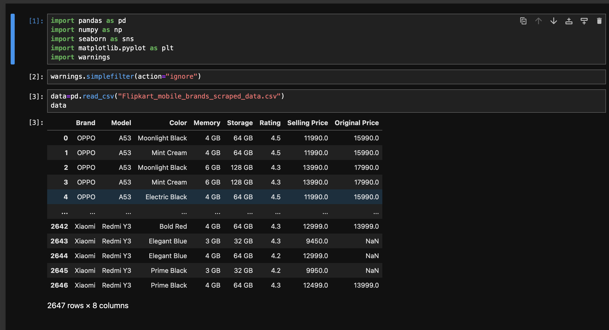
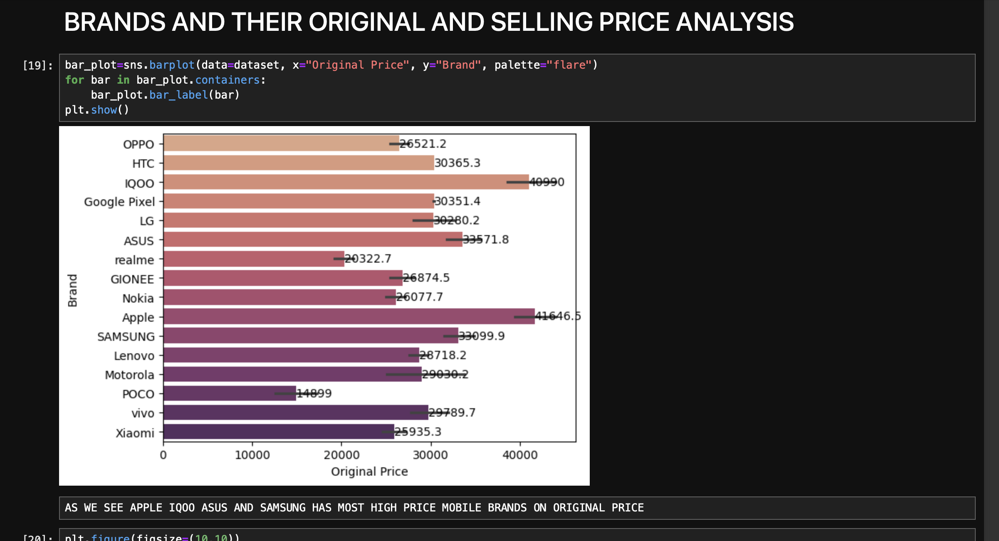
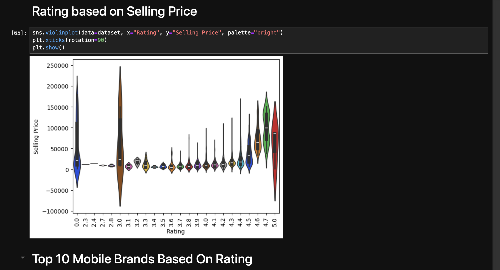
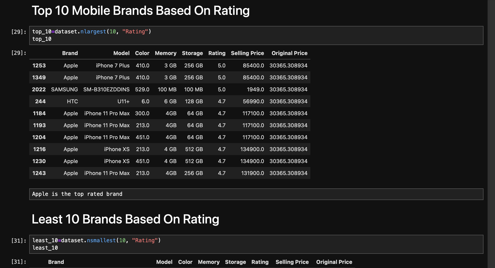
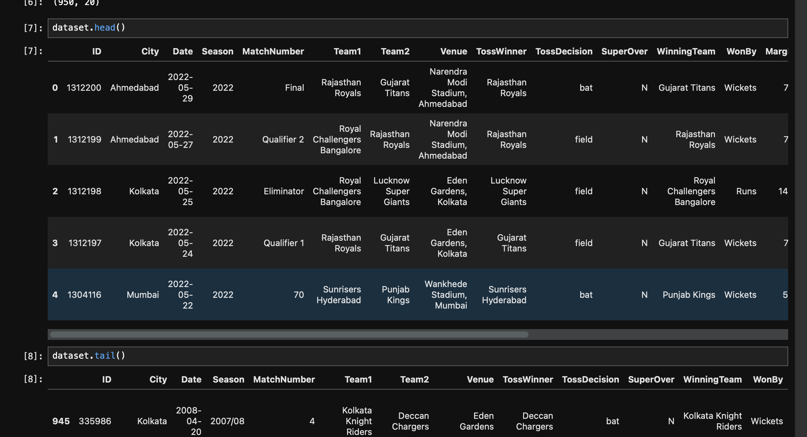
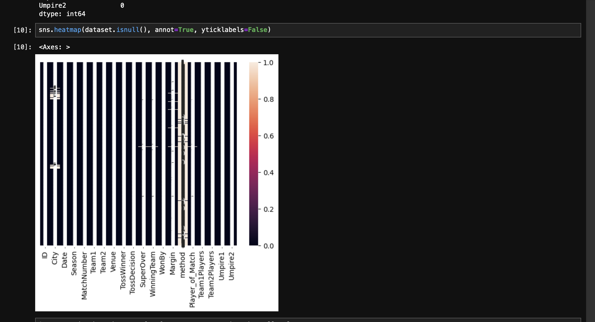
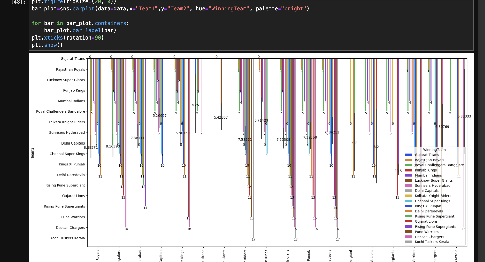
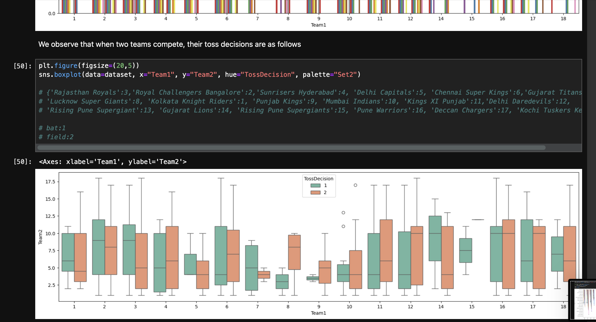
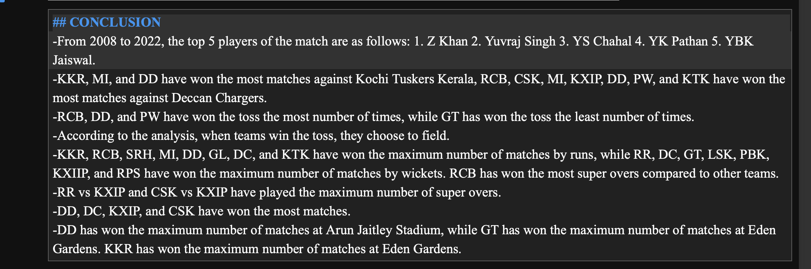

This interactive website uses Django for the backend, React.js for the frontend, and MySQL for the database.
It allows users to search for projects via voice commands, with full authentication and secure APIs for seamless interaction.
The platform is designed for an engaging user experience, enabling easy project discovery and interaction.
Flipkart Mobile Data Sale Analysis
Using Machine Learning
By analyzing Flipkart's mobile sales data,
I figured out which mobile brand people buy the most. Also,
I checked which brand gets the best ratings from customers.
This helps us see which brand people like the most and which one they think is the best.
Click on images for full view




Analysis On IPL Season 2008-2022
Using Machine Learning
IPL seasons from 2008 to 2022, I analysed team performances,
including how teams win, the stadiums where teams secure victories,
and various other factors.
Click on images for full view





Rock Paper Scissor Game
Using HTML CSS & JavaScript
made a rock-paper-scissors game using HTML, CSS, and JavaScript.
You can click or tap to choose rock, paper, or scissors. The game figures out who wins and updates the score.
Let's play!
I developed a virtual paint using OpenCV . This involved utilizing computer
vision techniques to track hand movements and translate them into real-
time painting on a virtual canvas. The application allowed users to express
their creativity without physical brushes or canvases, showcasing my
proficiency in computer vision.
Click on images for full view
Fraud Detection:
of Credit Card
I successfully implemented a credit card fraud detection system using
machine learning. This involved creating an advanced system with cutting-
edge algorithms to quickly identify and address fraudulent activities. This
experience not only showcased my proficiency in data science but also
demonstrated my commitment to improving financial security through
innovative technological solutions.